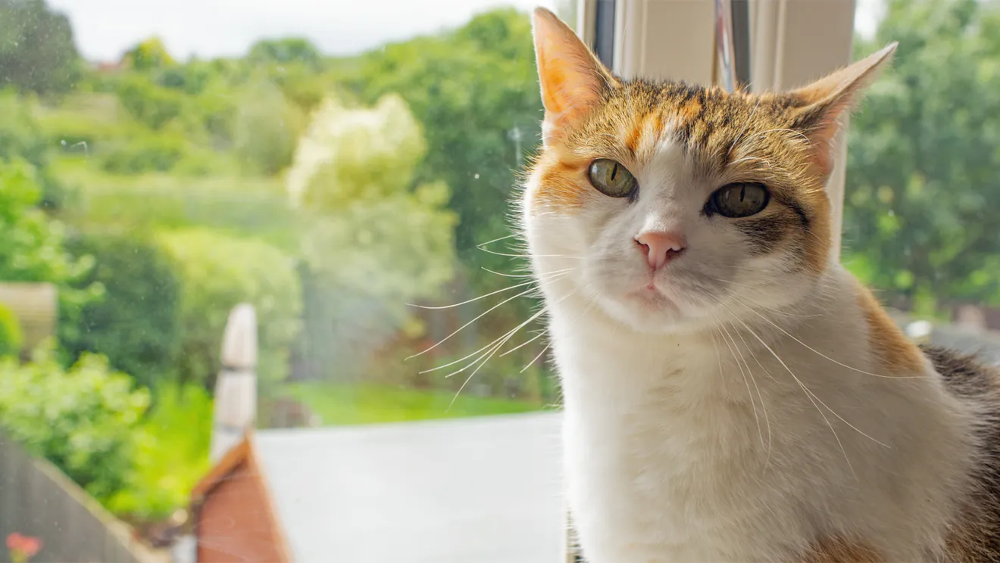

Fernanda Sabatini

Student at ITCR and intern at Intel
I am a Mechatronics Engineering student at the Costa Rica Institute of Technology (ITCR in Spanish),
and I've been working as an intern at Intel since 2020. I'm a huge foodie, and my favorite foods are sushi,
french fries, and pizza. My favorite actor is Pedro Pascal.
Completed courses
In the last year I've completed the following classes for my major:
- System Modeling for Mechatronics: Contents studied in this class include Fourier Series, complex integrals and
derivatives, Fourier Transforms, Laplace Transforms, etc.
- Manufacturing Processes
- Thermofluids: a mix of thermodynamics and fluid dynamics.
My hobbies
- Reading
- Learning languages
- Watching films
- Cooking

Projects
Check the projects I've done while learning to build web pages: